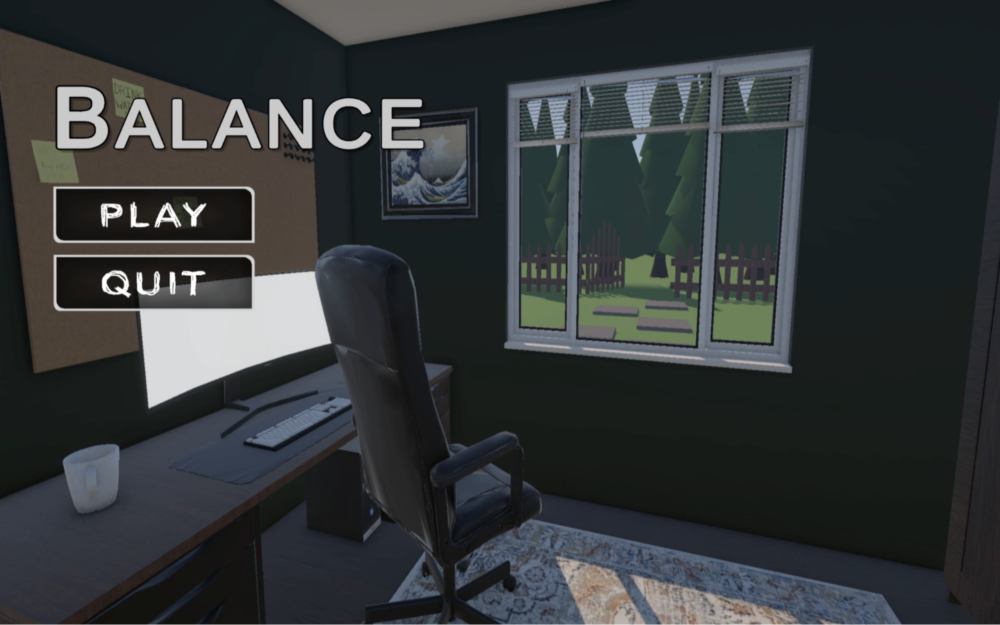

This project is a café point-of-sale system developed using a layered architecture approach.
The system uses software design patterns such as Command, Adapter, and State to organise responsibilities and improve maintainability.
Software developer
Java, GitHub
Architecture, maintainability, and design pattern implementation